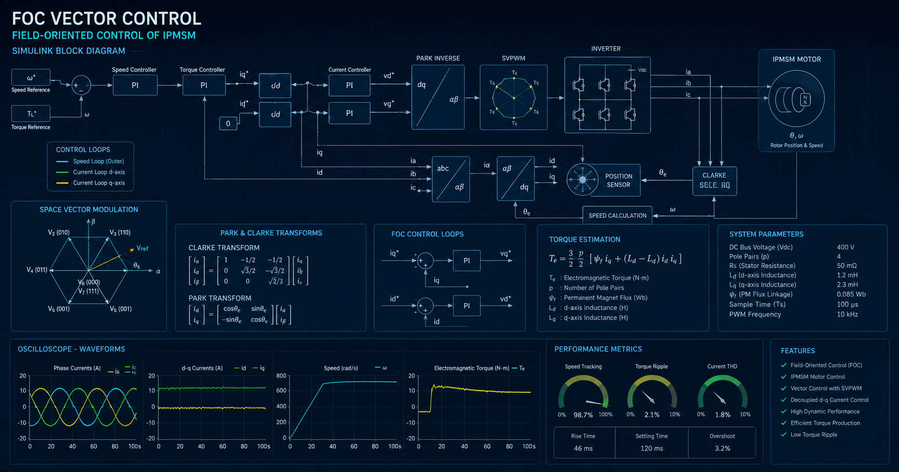
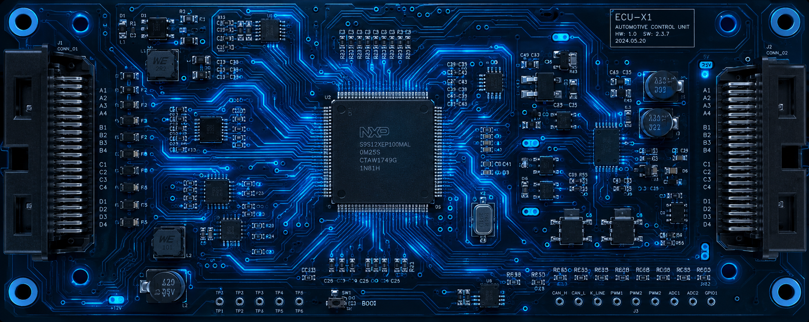
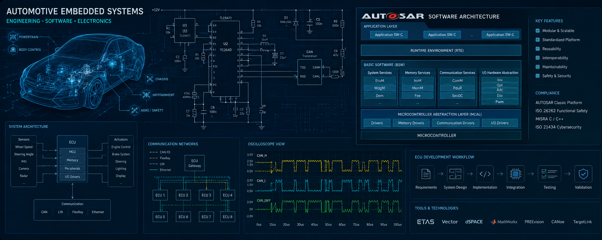
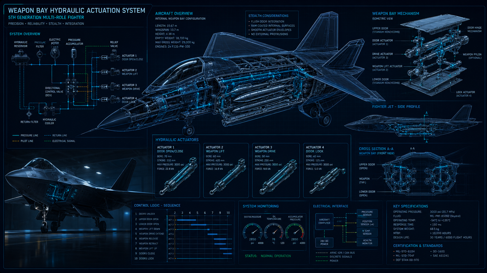

Afeef Kallanthodan
Embedded Software Development Engineer
Mechanical engineer turned embedded software specialist. 8+ years building safety-critical systems across aerospace and automotive domains — from 5th-generation fighter aircraft to AUTOSAR motor control. Hobby tinkerer with local LLMs and AI on the side.
About Me
From aerospace R&D to automotive embedded software
Hello, I'm Afeef
I'm a Mechanical Engineering graduate who found his calling at the intersection of hardware and software. My career began at India's Aeronautical Development Agency, where I spent nearly 4 years designing and optimizing systems for next-generation fighter aircraft — working with hydraulics, environmental control systems, and dynamic modeling in MATLAB/Simulink.
That foundation in control systems and simulation naturally led me into automotive embedded software. Over the past 4+ years, I've been developing and testing AUTOSAR-compliant components, building motor control algorithms for multi-phase IPMSM drives, implementing Field-Oriented Control (FOC) strategies, and creating toolchains for unit testing and code generation.
Today, I combine model-based design expertise with hands-on C/C++ development, Python automation, and embedded systems work — always with a focus on safety-critical, standards-compliant engineering. Outside of work, I explore local AI and LLM tools, building projects that run entirely on my own hardware.
Engineering Overview
Full-lifecycle coverage across Automotive & Aerospace domains
V-Model Lifecycle Coverage
ISO 26262 / DO-178 / ASPICE — highlighted nodes = direct hands-on experience · grey = adjacent knowledge only
Highlighted (blue) = Hands-on experience · Grey = No direct exp. · ADA (Aerospace) · Tata Elxsi · Valentum · Koosys (Automotive)
Industry Experience Split
Based on professional employment: ~8.5 years total
54% · 4.5 yrs
46% · ~4 yrs
AI projects showcased
in the AI Lab section
Career Timeline
Bar width proportional to tenure · ~4 yrs = 100%
Technical Standards Proficiency
Depth across key industry standards, frameworks & toolchains
Work Experience
My professional journey across aerospace and automotive engineering
Embedded Software / Test Engineer
Koosys GmbH | Regensburg
- Developing motor control algorithms for 6-phase IPMSM and Field-Oriented Control (FOC) software
- Creating model-based design algorithms, generating AUTOSAR ASIL-B compliant code via Embedded Coder
- Building MIL test models and tuning control loops for production motor drives
- Optimizing MATLAB/Embedded Coder toolchains and integrating generated code into production software


Embedded Software / Test Engineer
Valentum Engineering GmbH | External at Koosys GmbH, Regensburg
- Conducted unit, integration, and system testing across SWE4–SWE6 development phases
- Performed static code analysis and automated testing using Java and CAPL scripting
- Debugged embedded hardware via WinIDEA and simulated CAN networks with CANoe
Model Based Design Engineer
TATA Elxsi Ltd. | Bangalore
- Developed AUTOSAR-based Electric Power Steering (EPS) software components using MATLAB/Simulink and Stateflow
- Analyzed software requirements, estimated implementation complexity, and created traceable model-based design artifacts
- Performed static model analysis with Model Examiner (MXAM) and maintained requirement traceability using DOORS/DNG
- Generated C code with Embedded Coder, updated ARXML configuration, and supported integration with AUTOSAR tooling
- Performed static code analysis with Polyspace and validated models using MIL/SIL test vectors and procedures
- Followed V-model, ASPICE, ISO 26262, MISRA C, and MAAB guidelines in an Agile automotive development environment


Mechanical Engineer
Aeronautical Development Agency | Bangalore
- Worked with the inboard systems team on aircraft-level integration of electrical, hydraulic, ECS, and LRU installations
- Reviewed system architecture inputs from system groups and internal program teams to assess accommodation, interface, and installation feasibility
- Evaluated functional, positional, routing, size, and maintainability constraints for system placement inside aircraft structure
- Conducted mechanism and system studies for landing gear, weapon bay, radome, and canopy concepts using CAD and simulation workflows
- Created dynamic and load models in MATLAB/Simulink; automated weight distribution scripting across aircraft stations and bulkheads
Skills & Expertise
Technologies and tools I work with daily
Simulation & Modeling
Programming
Testing & Validation
Automotive Standards
Embedded Systems
Tools & Infrastructure
AI & Machine Learning
Projects
A selection of hands-on projects from my portfolio
Professional Experience Highlights
Selected work aligned with company experience and public resume scope.
System Identification & Parameter Estimation — Real PMSM
Real-time bench testing of IPMSM/PMSM motor — system identification, parameter estimation (R, Ld, Lq, flux linkage), real-time control tuning, and Model-Based Design with automatic Embedded Coder code generation.
6-Phase IPMSM FOC Control & Simulation
Model-based development work for 6-phase IPMSM motor control, including FOC control logic, plant modeling, MIL evaluation, parameter tuning, and AUTOSAR code generation.
C/C++ Unit Testing
Unit test development for embedded automotive software using TESSY and CppUTest, aligned with SWE4 verification activities.
Software & System Testing
Software and system test activities using CANoe, CAPL, Java automation, CAN simulation, and embedded debugging support across SWE5/SWE6 workflows.
Integration Test Environment
Integration test setup, support libraries, rest bus simulation, and toolchain support using WinIdea, CANoe, and C#.
AUTOSAR EPS Model-Based Design
Model-based development experience for Electric Power Steering software components, covering requirement analysis, Simulink/Stateflow modeling, and AUTOSAR architecture alignment.
EPS MIL/SIL Validation
Model-in-the-loop and software-in-the-loop validation work using test vectors and procedures to verify model behavior, generated code behavior, and requirement coverage.
Code Generation & Static Analysis
Production code generation support using Embedded Coder, ARXML updates, and static code analysis with Polyspace as part of AUTOSAR software component development.
Aircraft System-Level Management
Professional experience coordinating aircraft system architecture inputs with inboard accommodation, routing, functional, positional, size, and maintainability constraints.
Aircraft Mechanism Studies
Professional mechanism study experience for weapon bay, landing gear, and canopy opening concepts, including packaging, motion feasibility, actuator placement, and clearance review.
Aerodynamic Master Geometry Creation
Professional CAD experience creating and refining aircraft numerical master geometry for aerodynamic surfaces, stealth-oriented shaping, and downstream system packaging studies.
Personal Engineering Projects
Independent tooling and experiments built outside company work.
Flight Control Simulation Case Study
Personal 6-degree-of-freedom flight dynamics simulation study using MATLAB and Simulink, focused on aircraft motion, response behavior, and control-system evaluation concepts.
Landing Gear Simscape Multibody Model
Personal mechanism simulation study using CATIA V5 geometry and MATLAB Simscape Multibody to evaluate linkage motion, actuation behavior, and member load paths.
Scapy CAN Bus Security Testing
Python-based CAN network security testing scripts using Scapy for automotive bus simulation, fuzzing, and vulnerability assessment.
Python Automation Tools
Desktop applications for engineering workflow automation — debugging tools, data visualization, and code processing utilities built with Python.
Excel Import/Export Pipeline
Automated Excel data processing and report generation pipelines for engineering test data, requirements tracing, and project documentation workflows.
Docker Development Environments
Containerized development environment configurations for embedded toolchains, cross-compilation setups, and reproducible build systems.
AI & Local LLM Lab
Passion projects exploring AI, computer vision, and large language models
Beyond my day job in embedded systems, I spend evenings and weekends exploring what local AI can do. Every model runs on my own hardware — an RTX 4060 with 8 GB VRAM — no cloud APIs required for inference. These projects reflect a genuine curiosity about making AI practical, private, and self-hosted.
CppUTest RAG Generator v2.1
Auto-generates C unit tests by combining CodeLlama with a Retrieval-Augmented Generation pipeline. The system analyzes source code, retrieves relevant context via FAISS vector search, and produces CppUTest-compatible test files ready for compilation.
Architecture
- Backend: FastAPI serving the RAG pipeline and test generation API
- Frontend: Nginx-hosted UI built with Tailwind CSS
- LLM Runtime: Ollama running CodeLlama for local inference
- Vector Store: FAISS for semantic code retrieval
- Database: SQLite for session and history management
Key Features
- GPU auto-detection with CUDA/CPU fallback
- Batch processing for multi-file test generation
- Coverage reports: LCOV, HTML, JUnit XML
- CI/CD integration with GitLab pipelines
Synology AI Photo Tagger
Fetches photos from a Synology NAS and generates rich AI-powered tags using a pipeline of 6+ local models. Designed for bulk photo organization with intelligent categorization, face recognition, and event detection.
Architecture
- Object Detection: YOLO for scene and object recognition
- Face Analysis: DeepFace for clustering, emotion, age, gender
- Image Understanding: OpenCLIP, BLIP2, LLaVA, Moondream
- GPU Runtime: All models optimized for RTX 4060 8 GB VRAM
- Storage: SQLite for tag persistence and deduplication
Key Features
- Face clustering with automatic group detection
- Duplicate photo detection via perceptual hashing
- Event and scene detection with temporal grouping
- Tag normalization and confidence scoring
Education
Academic foundation
Bachelor of Engineering — Mechanical Engineering
MG University
2011 — 2015
Focus areas: Mechatronics and control systems, engineering mathematics, and programming in C. This foundation in mechanical systems and control theory laid the groundwork for a career bridging hardware design and embedded software.
Awards
Recognition for outstanding contributions
Extra Mile Award
TATA Elxsi Ltd.
2022
Awarded for delivering two complex and critical AUTOSAR software components ahead of schedule, demonstrating exceptional commitment and technical excellence under tight project deadlines.
Get in Touch
I'm always open to discussing new opportunities and collaborations
Let's Connect
Whether you're looking for an embedded software engineer, have a project in mind, or just want to talk about motor control and AUTOSAR — feel free to reach out.
Prefer email? Drop me a message and I'll get back to you promptly.
Send Email